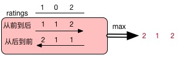

☰ 目录
135 Candy
There are N children standing in a line. Each child is assigned a rating value.
You are giving candies to these children subjected to the following requirements:
- Each child must have at least one candy.
- Children with a higher rating get more candies than their neighbors.
What is the minimum candies you must give?
Example 1:
Input: [1,0,2]
Output: 5
Explanation: You can allocate to the first, second and third child with 2, 1, 2 candies respectively.
Example 2:
Input: [1,2,2]
Output: 4
Explanation: You can allocate to the first, second and third child with 1, 2, 1 candies respectively.
The third child gets 1 candy because it satisfies the above two conditions.
解
只要右边的的得分比左边的大，就在左边的基础上+1；
最少是1；
从左到右遍历一遍，可以保证右边的邻居都比左边的大；
从右到左遍历一遍，可以保证左边的邻居比右边的大；
最后结果取两次遍历的最大值。

解题答案：
class Solution{
public:
int candy(vector<int>& ratings){
if( ratings.size() == 0 ) return 0;
int len = ratings.size(), ans = 0; // candy sum up
vector<int> nums( len, 1); // all initiates to 1
for( int i = 1; i < len; i++ ){
if( ratings[i] > ratings[i-1] ) nums[i] = nums[i-1] + 1;
}
for( int i = len-1; i > 0; i-- ){
if( ratings[i-1] > ratings[i] ){
nums[i-1] = max(nums[i-1], nums[i] + 1);
}
ans += nums[i];
}
return ans + nums[0];
}
};
void test(){
Solution sol;
vector<int> ratings {1,2,2};
cout << sol.candy(ratings) << endl;
}
参考： https://blog.csdn.net/qq508618087/article/details/51331132
从右到左的遍历，可以不用取最大值，用如下代替：
for(int i = len-1; i >0; i--)
{
if(ratings[i-1] > ratings[i] && nums[i-1]<= nums[i]) // 只有左边比右边 <= 时，才更新
nums[i-1] = nums[i]+1;
ans += nums[i];
}